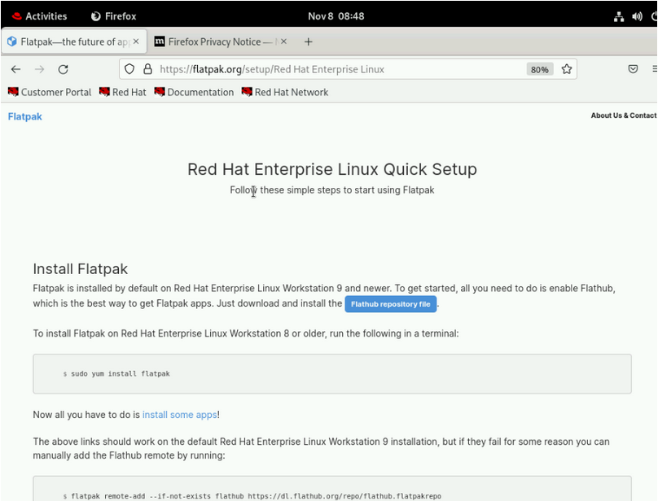
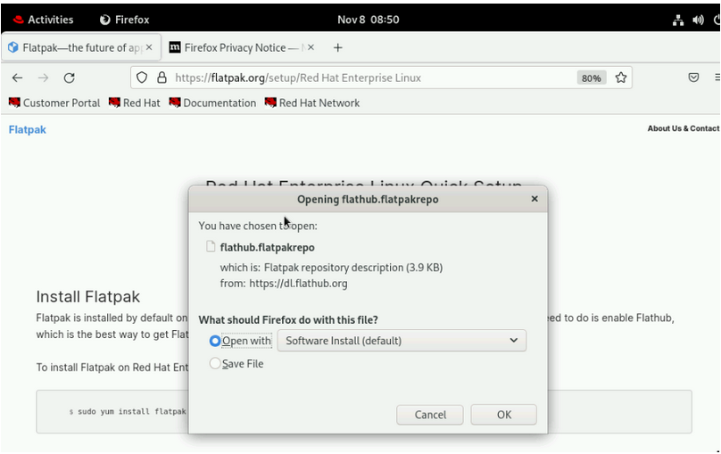
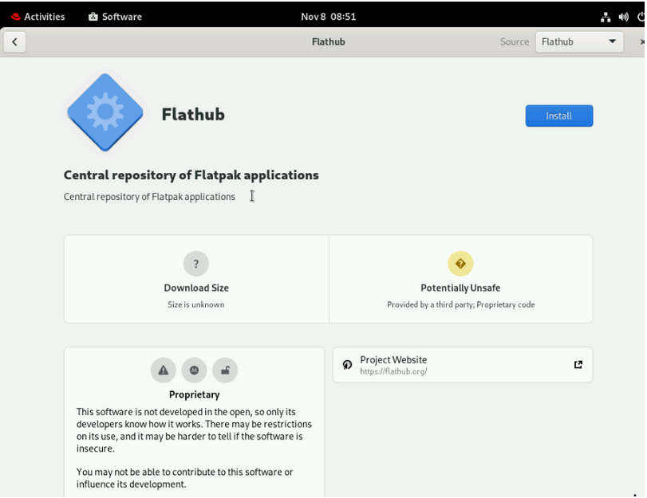
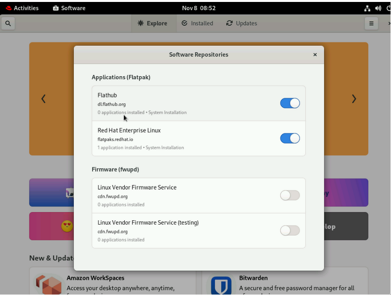
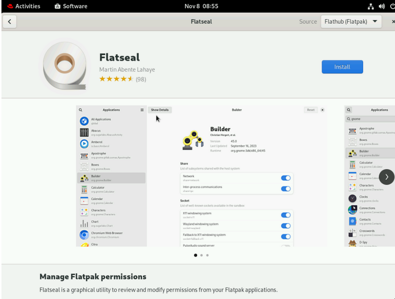
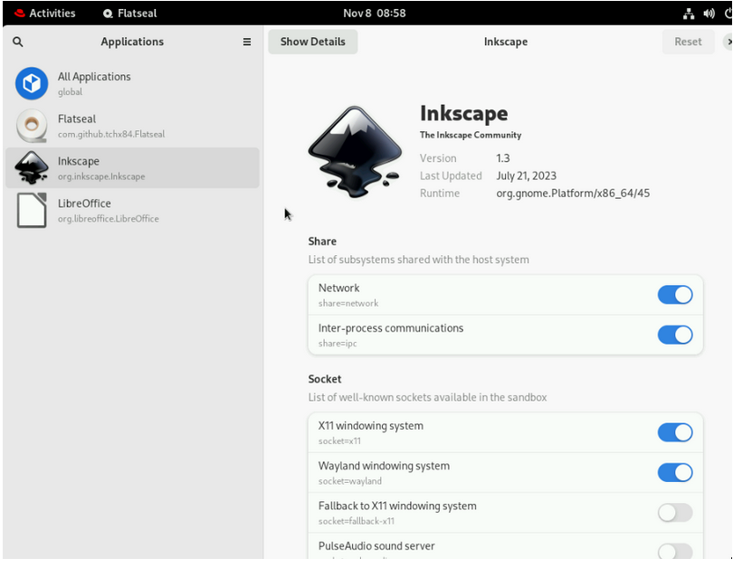

Adding Unsupported Repositories for Flatpak
Flatpak applications are distributed from repositories called remotes. Red Hat provides a remote with RHEL applications. Additionally, third-party remotes are available as well.
You can add any Flatpak remote. The most popular upstream remote is Flathub.
Note: Red Hat does not support applications from third-party remotes.
Instructions for adding Flathub as a remote can be found at flatpak.org
-
Visit the link at flatpak.org
-
Click Flathub repository file to download the Flatpak repo file.

-
-
In the prompt dialog, choose Open with and Click OK.
 -
The Flathub remote is visible. Click Install.
 -
On the main
Gnome Software Centerscreen, click the hidden menu button (hamburger button) in the top right. You see the different Flatpak remotes listed. -
You can optionally install Flatseal. This application is useful for tweaking the permissions of the Flatpak sandbox.
 -
Running Flatseal allows you to tweak different permissions within the Flatpak sandbox per Flatpak. The following screenshot shows changing the permissions for the Inkscape application. You can test changing the permissions on any application you installed using Flatpak.
 -
The Flatseal application itself has a reset button in the upper right corner. Flatpak on the command line can also reset permissions per application.
-
You can run
Flatpak permission-reset <application ID>to do that.[student@workstation ~]$ flatpak list Name Application ID Version Branch Origin Installation Flatseal com.github.tchx84.Flatseal 2.1.0 stable flathub system Inkscape org.inkscape.Inkscape 1.3 stable flathub system LibreOffice org.libreoffice.LibreOffice stable rhel system [student@workstation ~]$ flatpak permission-reset org.inkscape.Inkscape
-